Project - Quantum Computing - Portfolio Optimisation using Hybrid Algorithm
1. Technical Solution Overview
1.1 Introduction
This report presents a business case for portfolio optimisation by integrating quantum computing algorithms, specifically Variational Quantum Eigensolver (VQE) and Quantum Approximate Optimization Algorithm (QAOA) into the stock selection process, while continuing to use classical computing for portfolio allocation. By leveraging the unique computational capabilities of Quantum computing, Financial Institutions can potentially improve their investment strategies and mitigate risks using this hybrid portfolio optimisation approach.
1.2 Problem Statement
In wealth management at banks, relationship managers provide advice to their customers based on a ‘house’ view crafted internally by their respective Investment strategy teams. This is akin to a black box where house views are formulated through a combination of financial modelling, time-series forecasting, fundamental & technical analysis, and human judgement. This black box approach also implies that there is a lack of transparency on the basis and success rates of these strategies; from a customer’s perspective, it would seem like they are fed with the same advice templates year-on-year. This rigid one-size fits all approach limits the banks’ ability to provide science-based advice to their high-net-worth customers who may want professional advice based on their own selection of stocks.
Yet, traditional approaches to optimise stock selection and portfolio allocations rely on classical computer methods that may not fully capture the potential insights available through emerging technologies. By incorporating quantum computing algorithms into stock selection, there is much potential to analyse complex patterns and relationships within large datasets, leading to more accurate and effective stock selection.
1.3 Broad Technical Solution
Hybrid Portfolio Optimisation Approach. Selecting stocks for an optimal portfolio is a complex task that involves navigating a vast number of potential choices to identify suitable securities that can offer the maximum return for a given level of risk, or conversely, minimize the risk for a given level of returns. Given the combinatorial nature of the problem, where the number of potential portfolio configurations grows exponentially with the number of assets, classical computational methods may falter, especially when handling larger portfolios. Quantum computing therefore offers an appealing solution, to potentially speed up the stock selection process and improve the accuracy of solutions. By exploiting the proven classical computation approach, we recommend a hybrid approach of quantum computation algorithms to perform effective stock selection and classical computation algorithms to perform portfolio allocation via a hybrid portfolio optimisation approach. See Figure 1 for the workflow.
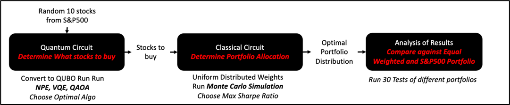
Quantum Computing for Stock Selection. Quantum algorithms, such as VQE and QAOA, offer computational advantages for stock selection. By employing these algorithms, organizations can leverage their capacity to identify hidden correlations which may be challenging using traditional methods alone. By leveraging a quantum approach towards stock selection, financial institutions could achieve a competitive advantage by being able to uncover valuable insights and improve decision-making in the stock selection process.
Classical Computing for Portfolio Allocation. While quantum computing shows much promise for stock selection, it is also important to recognise its limitations (e.g. scalability, noise). Therefore, our team proposes to use proven classical computing methods for the portfolio allocation stage through Monte Carlo simulations, which guarantees practicality, stability, and reliable optimization in the portfolio allocation process.
2. Quantum Algorithms in Detail
The quantum algorithm is designed to choose 10 random stocks from the S&P500 index. A risk factor of 10 is chosen to generate the expected returns and covariance matrix based on 1 year of historical stock data. The randomly selected stocks will be converted to a Quadratic Unconstrained Binary Optimization (QUBO) formulation that will generate a binary equation that will be solved by three optimisers; (1) classical eigensolver, (2) Variational Quantum Eigensolver (VQE), and (3) Quantum Approximate Optimization Algorithm (QAOA).
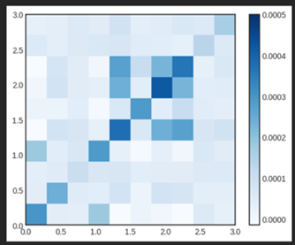
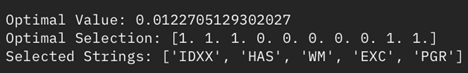
2.1 Quadratic Unconstrained Binary Optimization (QUBO)
The stock selection problem needs to be translated into a form suitable for quantum algorithms. This involves converting the problem into a Quadratic Unconstrained Binary Optimization (QUBO) formulation. A QUBO problem aims to minimize or maximize an objective function comprising binary variables.
It can be expressed as:
f(x) = ∑i,j Qij xi xj + ∑i hi xi
where:
• xi and xj are binary variables that can take on the values 0 or 1
• Qij is a coefficient that represents the strength of the interaction between variables i and j
• hi is a coefficient that represents the strength of a bias term for variable i.
The goal of solving a QUBO problem is to find the binary values of x that can minimize or maximize the objective function f(x). In the context of stock selection, each binary variable xi can represent whether a particular stock is included in the portfolio, and the coefficients in the objective function can reflect various factors such as expected returns and risks associated with the stocks.
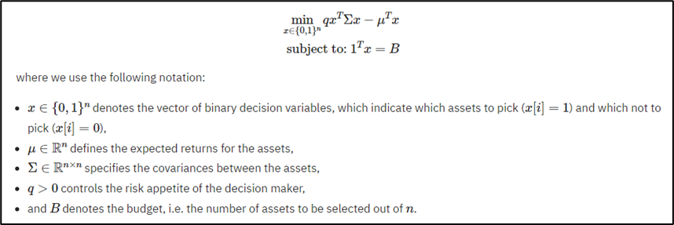
For the purposes of this project, the above QUBO format is used for our initial Stock Selection process. We will assume that the full budget B will be spent, and we will map the equality constraint (1Tx = B) to a penalty term which will then be scaled by a parameter and subtracted from the objective function. This function can then be mapped to a Hamiltonian function whose minimum energy ground state corresponds to the optimal solution. Next, we employ quantum algorithms like QAOA and VQE to derive our optimal set of stocks to select and include for our portfolio.
2.2 Variational Quantum Eigensolver (VQE)
VQE is designed to find the minimum eigenvalue of a Hamiltonian, representing the ground state energy of a quantum system. In the context of stock selection, this ground state can be associated with the optimal set of stocks.
The VQE begins with an ansatz, a specific guess for the quantum state, typically near to the ground state of the system. This state is prepared on a quantum computer and the corresponding energy (the expectation value of the Hamiltonian) is measured.
The measured energy value is then returned to a classical computer, which hosts an optimization algorithm. This classical optimizer fine-tunes the parameters within the quantum circuit to lower the energy, working under the principle that the ground state of a system is its minimum energy state. This process iterates until the optimizer can no longer find lower energy values and therefore settles to the optimal solution.
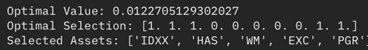
2.3 Quantum Approximate Optimization Algorithm (QAOA)
QAOA is designed to find near-optimal solutions to combinatorial optimization problems. The algorithm employs a two-step procedure that involves a unitary transformation dependent on a cost Hamiltonian (HC) and a mixer Hamiltonian (HB), denoted as U(HC,γ) and U(HB,β) respectively. QAOA starts by encoding the combinatorial problem into a cost function that is then mapped onto a cost Hamiltonian, HC. This Hamiltonian is a quantum operator representing the energy landscape of the problem. Alongside the cost Hamiltonian, a mixer Hamiltonian, HB, is defined to drive transitions between different states in the problem’s solution space.
The algorithm starts with an initial state, which is a uniform superposition of all possible solutions. It then alternates between applying the cost and mixer unitary operators, U(HC,γ) and U(HB,β), a predetermined number of times (p). The effect of these operations is two-fold: the cost Hamiltonian operator increases the probability of measuring good solutions, while the mixer Hamiltonian ensures a comprehensive exploration of the solution space.
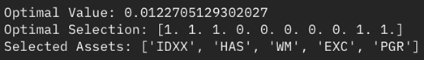
Like VQE, QAOA also leverages the strengths of both quantum and classical computers, using the former for maintaining a superposition of potential solutions and the latter for guiding the search for high-quality solutions.
2.4 Optimizer with Highest Optimal Value
The quantum code is also designed to select the optimiser algorithm with the highest value, and the corresponding stocks that would be selected to be acquired. Figure 6 shows that for our first simulation, the Variational Eigensolver (VQE) algorithm generated the highest value with the following stocks (IDXX, HAS, WM, EXC, and PGR) to be acquired. These stocks will then be transferred to the classical algorithm for subsequent processing.
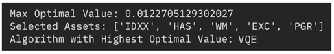
3. Classical Algorithm in Detail
Maximum Sharpe Ratio Portfolio Optimisation. We can now take the output (specific selection of stocks based on a portfolio) and insert into a classical algorithm to achieve an optimal allocation of funds using maximum Sharpe Ratio approach. For this report, the following stocks will be used as an example: IDXX, HAS, WM, EXC, and PGR.
3.1 Classical Portfolio Allocation following Quantum Stock selection
Preparing Financial Data. Through Yahoo Finance, the historical adjusted closing prices for each selected stock are extracted for a specified date range with up to 5 years. Daily returns of each stock prices are then computed through the pct_change() function. By leveraging historical stock prices, investors can gain insights into the performance and volatility of individual stocks and use this information to make informed portfolio allocation decisions.
Uniform Distribution Approach. To determine the optimal weight for each stock, random weights from a uniform distribution were used, and then normalized by dividing them by their sum to obtain a percentage of the entire holdings. Random generated weights from a uniform distribution, meaning evenly distributed between 0 and 1, are used to a wide range of potential weight combinations and to consequently derive a diverse set of portfolios. The impact of these portfolios will then be evaluated through back testing. While random numbers generated from other distributions, such as the exponential or log-normal distributions, could be used, uniform distribution is commonly used in such portfolio optimization studies such as Markowitz, 1952 and Asadujjaman, 2018.
Portfolio Performance Metrics. Several metricsare used to evaluate the risk-return characteristics of investment portfolios and assess the performance of the portfolio. First, the expected portfolio return (rp) is obtained by multiplying the average daily returns of the stocks by the number of trading days in a year (252 days) and taking the dot product with the weights to account for the compounding effect of daily returns over a year. Second, the portfolio variance (port_var) is computed to determine the volatility of the portfolio’s returns with consideration of the individual stock variances and covariance between different stocks within the portfolio. This parameter is considered as a key input to the portfolio optimisation problem (Markowitz, 1952). This value is calculated by multiplying (1) weights of the covariance matrix (cov) of the stock returns, and (2) 252 which is the total number of trading days within a year. Lastly, the Sharpe ratio (sharpe) is computed as a measure of risk-adjusted return in portfolio analysis; this allows an evaluation of the excess return earned by a portfolio relative to the risk taken. A higher Sharpe ratio indicates a better risk-adjusted performance which implies a higher return relative to the volatility of the portfolio (i.e. the best returns based on the risk taken). The Sharpe ratio is computed by subtracting the risk-free rate (rf) from the portfolio return and dividing it by the standard deviation of excess returns. Sharpe ratios for more volatile portfolios or portfolios with other differences in return statistical properties (e.g., certain mutual funds, hedge funds etc.) may be more difficult to estimate accurately than more stable portfolios such as ETFs (Christie, 2005). The risk-free rate (rf) represents the returns that an investor can expect from an investment with zero risk. A 2% risk-free rate is used in our analysis and is often derived from the yield of government bonds or other low-risk financial instruments. The average 10-year US treasury bond is between 1% and 3% (U.S. Department of the Treasury, 2022). Performance metrics provides insights into the use and interpretation of these metrics for assessing portfolio performance. While this approach provides certain levels of assurance of the portfolio returns, other researcher such as Anderson et al., 2009 would argue for a better approach using uncertainty-return trade-off approach instead of the current and traditional risk-return trade-off approach for a better assessment. Nonetheless, a generic and common approach was used to assess the performance of various portfolios.
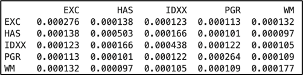
Monte Carlo Simulation. With the understanding of generating one portfolio, Monte Carlo simulation is used to determine the expected value from the average of a large sample size. As the number of samples increases, the average of the sample values will converge to the expected result. In our case, 10,000 random portfolios are generated, which takes less than 1min to execute. We can then identify the most optimal risk-free portfolio with the highest Sharpe ratio, and the associated weightage for each stock.
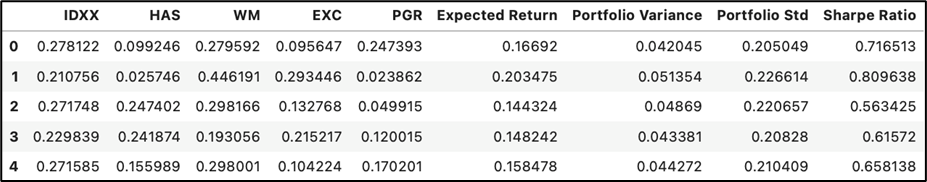
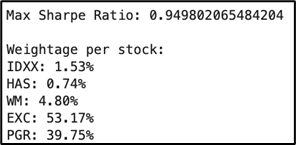
Analysis of Portfolio Optimisation Algorithm. To evaluate the performance of the generated portfolio, an initial investment of $100,000 was used in three portfolios: (1) portfolio with the highest Sharpe Ratio, (2) equal weighted portfolio (i.e. 20% weighs for each of the 5 stocks), and (3) S&P500 index as a benchmark. For the first run, we can see that the recommended portfolio generates the highest returns of 27.52% compared to the other two which has about less than 8% returns. Based on 10 runs of the same portfolio, we can see that the optimised portfolio has more than 23% average returns over two years, or more than 16.5% annual returns compared to the other two portfolios.
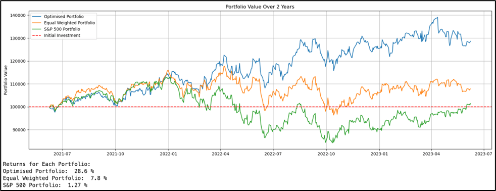
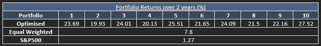
Further AnalysisA total of 30 simulations of random samples (different stocks each) was performed to determine the average annual returns of the three different portfolios. More than 90% of simulations selected VQE as the optimal quantum algorithm. The highest average annual returns were 7.86% from the optimised portfolio, followed by 0.8% from the equal weighted portfolio, and 0.64% from the S&P500 Index portfolio. This can conclude that VQE is the most optimal optimiser and that the use of the Maximum-Sharpe Ratio method for portfolio optimisation can potentially generate an expected 7.86% annual returns. See Figure 6 below, and appendix for detailed results.
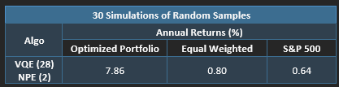
4. Quantum Advantages
Quantum computing offers several advantages that can be harnessed in stock portfolio optimisation. In our proposed solution, by integrating quantum computing algorithms such as VQE and QAOA, we can potentially provide superior results in the stock selection process compared to conventional methods.
Ability to Solve Complex Problems: Quantum computers can solve complex problems that are computationally intensive for classical computers. Quantum algorithms can help navigate the complexities of the stock selection process, which involves assessing and comparing a vast array of potential choices, exploring a large solution space more efficiently.
Multidimensional Data. Quantum computing is capable of handling multidimensional data more efficiently. In the case of stock selection, we deal with a multitude of variables for each stock, including historical price data, growth rates, market sentiment, and economic factors. Quantum computing can manage these complex, multidimensional datasets effectively, offering a more holistic approach to stock selection.
Improved Computational Efficiency. Quantum computers can potentially offer exponential speed-up for optimization problems. Algorithms like VQE and QAOA can process large amounts of information and run complex calculations more efficiently than classical algorithms. This potentially leads to improved accuracy in stock selection and faster decision-making, providing a competitive edge for financial institutions.
Hybrid Quantum-Classical Approach. Leveraging a hybrid quantum-classical computing approach allows us to take advantage of the best of both worlds. Quantum computing can be used for probabilistic tasks such as stock selection, while classical computing can be used for deterministic tasks that it excels in, like portfolio allocation. This hybrid approach is flexible and adaptable, offering potential improvements in both accuracy and efficiency.
A distinctive advantage of quantum computing is its potential to automate and enhance decision-making in the stock selection process, potentially reducing human error and bias. Unlike traditional Monte Carlo simulations, which require a predetermined set of stocks to be pre-selected – a process that can be influenced by human bias – quantum algorithms can objectively assess a broad array of stocks and output decisions on whether to include them in the portfolio or not. This automation can lead to a more thorough and unbiased selection of potential investment opportunities.
5. Commercial Cost and Benefits
We can analyse the potential cost for a bank to provide quantum services by focusing on the offerings provided by IBMQ, AWS (Amazon Braket), and Azure (Azure Quantum - Quantum Service | Microsoft Azure). The estimated costs are based on the assumption that the bank conducts 10,000 quantum transactions each month, with an average computing time of 5 minutes. Additionally, a comparison is made between the potential costs and the expected business gains. It should be noted that the following analysis assumes certain usage patterns and pricing structures, which may vary over time.
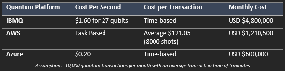
5.1 IBMQ
IBM offers both free access to basic machines and a paid partnership option for larger machines. However, as the average computing time takes five minutes per transaction, it is likely that the bank would require access to more advanced machines. Referring to Table 1 above, for 27 qubit systems, the cost is USD $1.60 per second. Therefore, the cost of providing the service is estimated at USD$4,800,000 per month.
5.2 AWS (Amazon Braket)
AWS pricing for quantum services can be complex, combining a “per task” price and a “per shot” price for multiple providers. Assuming the bank uses 8,000 shots for each transaction, the cost can vary depending on the specific quantum processing unit (QPU) used. Based on the provided information, the cost ranges from at least USD $2.80 to a maximum of USD $240.3 per transaction. The values in Table 1 assume an average cost of $121.05 for 8000 shots which equates to a total monthly cost of USD$1,210,500.
5.3 Azure (Azure Quantum - Quantum Service | Microsoft Azure)
Azure Quantum offers a flexible pricing model, ranging from as low as USD $0.02 per 10 milliseconds increment of job time to more substantial costs exceeding USD $125,000 per month. Assuming the bank’s average computing time of 5 minutes per transaction, the projected monthly cost is USD $600,000.
5.4 Comparison to Expected Business Gains
The implementation of a quantum computing service can result in substantial business gains for the bank, considering the significant revenue generated by its wealthy clients, which exceeds SGD200 million per month (see Table 2 above). For example, in 2022, DBS attributed SGD 1.3 billion of its income from wealth management fees alone (DBS Full-year Net Profit Rises 20% to Record SGD 8.19 Billion, n.d.). Despite the costs associated with quantum computing services, the average cost of implementation remains relatively low in comparison to the revenue brought in by the bank’s clients. By harnessing the power of quantum computing, the bank can leverage advanced computational capabilities to optimize investment strategies, conduct risk analysis, and execute algorithmic trading strategies with unparalleled speed and precision. The resulting improvements in decision-making processes and investment outcomes can enhance customer satisfaction and drive further growth.
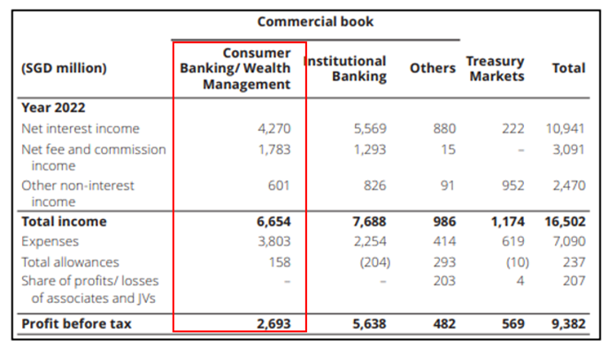
Quantum computing is recognisably accepted as the next quantum leap (no pun intended) in the finance industry with high potential to unlock ~USD1B for each finance institution (FI) through better corporate risk management, improved client satisfaction, operational excellence, and sustainability (Bobier et al., 2021). Hence, many FIs are investing into quantum technology firms and/or developing their own quantum computing capabilities in various areas such as lending and trading. With the top two global stock exchange operators (NYSE and NASDAQ in U.S.) having an estimated value of USD43T market capitalisation as of 2023 (Statista, 2023), many corporations (especially investment banks such as JPMorgan, Goldman Sachs) and retail investors are looking for various ‘sure-win’ quantitative trading methods.
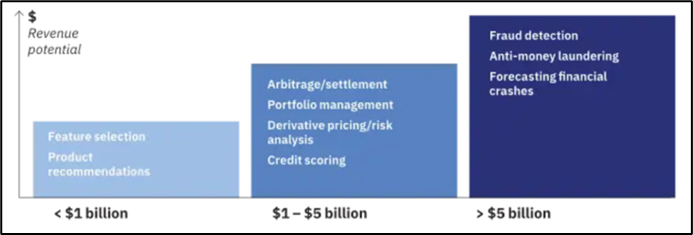
6. Risk and Challenges
Despite the compelling case for quantum computing’s potential in portfolio optimization, we must also consider the following business and technical challenges:
Technology Maturity. Currently, large-scale, fault-tolerant quantum computers are still under development. Given quantum technology is in its early stages, both the hardware and the algorithms are undergoing constant refinement and evolution. This immaturity could pose a risk to the viability of integrating quantum computing in our operations.
Quantum Error Correction. Quantum information is error-prone, due to both environmental noise and the inherently unstable nature of quantum states. To ensure reliable quantum computations, robust error correction algorithms would be essential.
Cost. Building, maintaining, and operating quantum computing infrastructure can be prohibitively expensive. This is exacerbated by the requirement for quantum computers to operate within clean environment such as extremely low temperatures, and low magnetic and noise interferences. While Quantum Computing as a Service (QCaaS) offerings, such as those from IBM and Classique, promises to lower these barriers, dependencies on external vendors could lead to vulnerabilities in terms of pricing fluctuations, service availability, and data sovereignty.
Interoperability. Quantum computing solutions may face difficulties in integrating with existing financial systems and processes. This could necessitate substantial development and testing, and potential compatibility issues.
7. Conclusion
In conclusion, the integration of quantum computing algorithms, specifically VQE and QAOA, onto stock selection process while using classical computing for portfolio allocation offers significant potential for improving investment strategies and mitigating risks. By leveraging quantum computational advantages, organizations can analyze complex patterns and relationships within large datasets, leading to more accurate and effective stock selection. Quantum algorithms such as VQE and QAOA provide unique capabilities for solving combinatorial optimization problems and handling multidimensional data, making them well-suited for stock selection. Additionally, the hybrid quantum-classical approach maximises strength of both quantum and classical computing strengths, improving efficiency and accuracy.
Quantum computing offers scalability and the potential for automation, paving the way for enhanced decision-making in the ever-evolving landscape of stock portfolio optimization. The use of the classical portfolio optimisation offers a variety of proven, simple, and easy-to-understand approaches that make its appealing to financial institutions and regulators. In other words, other than exploiting the benefits of both quantum and classical computation, the key advantage of explainability can be achieved to operationalise this hybrid portfolio optimisation approach easily into the finance industry. As quantum technology continues to advance, it holds great promise for revolutionizing the financial industry and empowering organizations to achieve competitive advantages in the realm of investment strategies.
8. References
Anderson, E. W., Ghysels, E., & Juergens, J. L. (2009, July 21). The impact of risk and uncertainty on expected returns. Journal of Financial Economics. https://www.sciencedirect.com/science/article/abs/pii/S0304405X09001275
Asadujjaman, Md., & Zaman, K. (2018, October 11). Robustness-based portfolio optimization under epistemic uncertainty - journal of industrial engineering international. SpringerLink. https://link.springer.com/article/10.1007/s40092-018-0292-4
Bobier, J.-F., Binefa, J.-M., Langione, M., & Kumar, A. (2021, July 1). It’s time for financial institutions to place their quantum bets. BCG Global. Retrieved May 1, 2023, from https://www.bcg.com/publications/2020/how-financial-institutions-can-utilize-quantum-computing
Bova, F. (2021, July 23). Quantum Computing Is Coming. What Can It Do? Harvard Business Review. https://hbr.org/2021/07/quantum-computing-is-coming-what-can-it-do
Christie, S. (2005, May 9). Is the Sharpe ratio useful in asset allocation?. SSRN. https://papers.ssrn.com/sol3/papers.cfm?abstract_id=720801
Classiq Technologies. (n.d.). Portfolio optimization. Classiq. https://docs.classiq.io/latest/user-guide/built-in-algorithms/combinatorial-optimization/problem-library/portfolio/
DBS full-year net profit rises 20% to record SGD 8.19 billion. (n.d.). https://www.dbs.com/newsroom/DBS_full_year_net_profit_rises_20pct_to_record_SGD_8_19_billion#:~:text=Full%2Dyear%20Consumer%20Banking%20%2F%20Wealth,lower%20wealth%20management%20product%20sales.
DBS, OCBC & UOB Average 18% Wealth Management Income Growth - Singapore Exchange (SGX). (n.d.). https://www.sgx.com/research-education/market-updates/20200303-dbs-ocbc-uob-average-18-wealth-management-income-growth
Duan, Y.C. (2007). A Multi-Objective Approach to Portfolio Optimization. Rose-Hulman Undergraduate Mathematics Journal: Vol. 8 : Issue. 1 , Article 12.
Egger, D. J., Gambella, C., Marecek, J., McFaddin, S., Mevissen, M., Raymond, R., Simonetto, A., Woerner, S., & Yndurain, E. (2020). Quantum Computing for Finance: State-of-the-Art and Future Prospects. IEEE Transactions on Quantum Engineering, 1, 1–24. https://doi.org/10.1109/tqe.2020.3030314
Hsu, J. C. (2005, January 11). Cap-weighted portfolios are sub-optimal portfolios. SSRN. https://papers.ssrn.com/sol3/papers.cfm?abstract_id=647001
Leymann, F., & Barzen, J. (2020). The bitter truth about gate-based quantum algorithms in the NISQ era. Quantum Science and Technology, 5(4), 044007. https://doi.org/10.1088/2058-9565/abae7d
Leymann, F., & Barzen, J. (2020). The bitter truth about gate-based quantum algorithms in the NISQ era. Quantum Science and Technology, 5(4), 044007. https://doi.org/10.1088/2058-9565/abae7d
Markowitz, H. (1952). Portfolio selection. The Journal of Finance, 7(1), 77. https://doi.org/10.2307/2975974
Mugel, S., Kuchkovsky, C., Sanchez, E., Fernández-Lorenzo, S., Luis-Hita, J., Lizaso, E., & Orus, R. (2022). Dynamic portfolio optimization with real datasets using quantum processors and quantum-inspired tensor networks. Physical Review Research, 4(1). https://doi.org/10.1103/physrevresearch.4.013006
Orus, R., Mugel, S., & Lizaso, E. (2018). Quantum computing for finance: Overview and prospects. Reviews in Physics, 4, 100028. https://doi.org/10.1016/j.revip.2019.100028
Owhadi-Kareshk, M. (2021, December 16). Portfolio Optimization on Classical and Quantum Computers Using PortFawn. arXiv.org. https://arxiv.org/abs/2112.08998
Portfolio Optimization — Qiskit Finance 0.3.4 documentation. (n.d.). https://qiskit.org/ecosystem/finance/tutorials/01_portfolio_optimization.html
Rhum, R. (2023, May 3). Rethink your volatility toolkit- quality and minimum volatility. BlackRock. https://www.blackrock.com/us/financial-professionals/insights/volatility-toolkit-qual-minimum-volatility
Statista Research Department, (2023, April 24). Largest stock exchange operators by market Cap 2023. Statista. Retrieved May 1, 2023, from https://www.statista.com/statistics/270126/largest-stock-exchange-operators-by-market-capitalization-of-listed-companies/
U.S. Department of the Treasury. (2022, October 11). Daily Treasury Real Long-Term Rate Averages. Interest Rate Statistics. https://www.treasury.gov/resource-center/data-chart-center/interest-rates/pages/textview.aspx?data=yield
9. Appendix 1
Detailed Analysis. A simulation of 30 were performed with each simulation generating a portfolio consisting of different stock. Based on the findings below, the optimised portfolio generated an average returns of 15.72% over 2 years or 7.86% annually, while the equal weighted portfolio generated 1.6% or 0.8% average returns per annum. In addition, the number of equal weighted portfolio is double of the optimised portfolio with 10 negative returns (~34% of the 30 samples). S&P500 portfolio has a stable average returns of 1.27% over two years or 0.67% per annum.
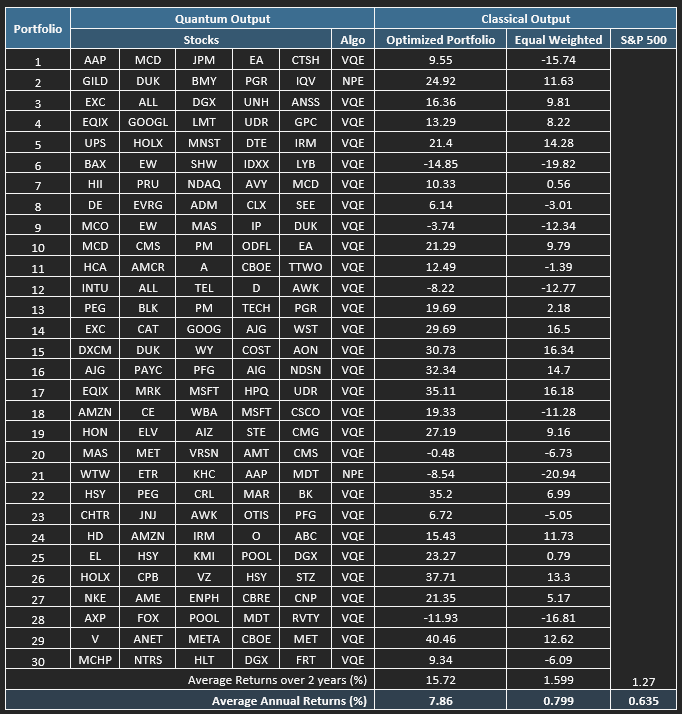
Alternative Approaches for Portfolio Optimisation.Maximum Sharpe ratio portfolio optimisation is one of the approach in determining the portfolio optimisation. It focuses on maximizing the risk-adjusted returns by using a portfolio with the highest possible Sharpe ratio. There are also various approaches for portfolio optimisation such as mean-variance portfolio developed by Markowitz, 1952 where optimized weights for each asset in the target portfolio are generated based on the expected returns and risks (volatility), and also equal weighted portfolio that were used to compare against the maximum Sharpe ratio portfolio as highlighted earlier in this report. The other four known optimisation approach is briefly discussed below.
Maximum Return portfolio. For investors who prioritise maximum returns without any regard of the associated risk, maximum return portfolio approach is best suited. We can see in Figure 15 that while the maximum return portfolio does not generate the highest Sharpe ratio, it provides the highest expected returns of about 23.4%. While the returns over 2 years was impressive at 36.47%, the associated risk are high, and may higher probability of generating negative returns compared to portfolios with risk factors considered.
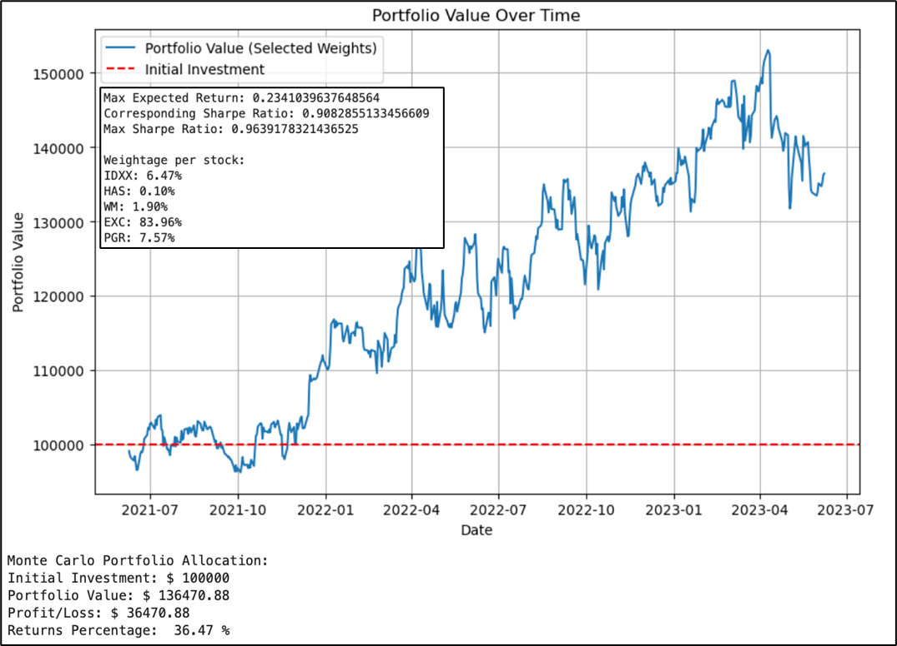
Minimum Volatility Portfolio. This optimization method is suitable for investors who are looking to maintain a diverse portfolio while reducing risk to the lowest possible. While the expected return is a secondary consideration, however this value should be respectable (i.e. positive returns) (Rhum, 2023).
Market Capitalization-Weighted Portfolio: Portfolio in this approach is created by the weight of each asset proportional to its market capitalization. However, this approach is deemed to be sub-optimal as overweight stocks tends to have high stock prices relative to their fundamentals while underweight stocks have low stock prices relative to their fundamentals. This could lead to concentration of stocks (Hsu, 2005), which may present a higher risk.
Multi-Objective Portfolio Optimization: This approach considers multiple objectives, such as maximizing returns, minimizing risk, and achieving other portfolio characteristics to develop the portfolio, and is also known as multiple objectives approach. In contract, the Mean Variance optimisation approach is known as a single objective approach. Interestingly, studies have shown that the optimal solution generated between this approach and the mean variance optimisation approach is similar, and that investors should choose portfolio based on the expected risk and return in any approaches (Duan, 2007).
Thus, after discussing the various portfolio optimisation methods, Max Sharpe Ratio approach remains to be the most balanced with key considerations on expected returns and associated risk factors.
10. Appendix 2
Quantum Circuit Model. Classiq platform provides quick access to variety of sample programmes to enable users to understand the performance of the quantum circuit and algorithm (Classiq Technologies, (n.d.)). In this case of portfolio optimisation, the objective of the available model was identify the best portfolio with the lowest difference between risk and profit. It has been adjusted find the best portfolio with the maximum Sharpe Ratio. Similar to our hybrid portfolio optimisation approach, the model consists of binary variable declaration for each asset (model.x) to indicate the chosen stock for the portfolio as well as the constraint on the specific number of assets within the portfolio. We have added formulas to find the maximum sharpe ratio with reference to the proven classical algorithm formula used in this report. A total of 140 gates consisting of 72 U-gates and 68 CX gates were used in this algorithm, and has a depth of 102 and width of 8.
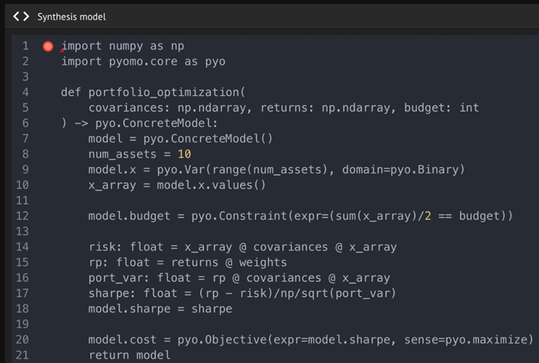
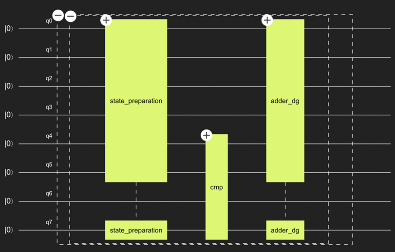
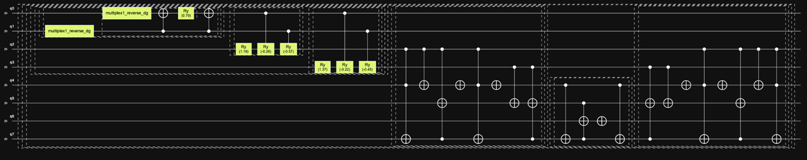
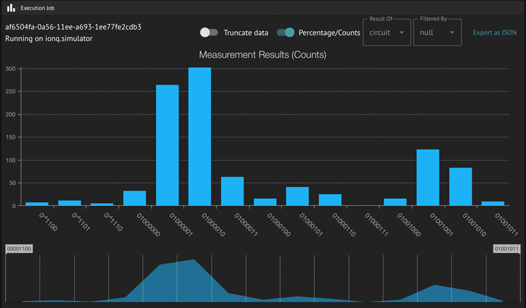
Classiq code
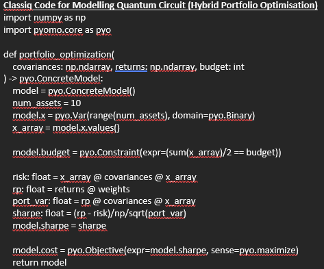